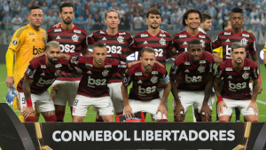

História do Flamengo
O Flamengo foi fundado em 17 de novembro de 1895 para as disputas de remo. A entrada da equipe no futebol aconteceu em 1912. Atualmente, o time rubro-negro é o maior vencedor da história do Campeonato Carioca, com 31 títulos. Segundo diversas pesquisas, é o clube com o maior número de torcedores do País.
Feito historico em 1981
Um dos times mais marcantes do futebol nacional, o Flamengo do início da década de 80 conquistou três Campeonatos Brasileiros, uma Libertadores e um Mundial. O ápice aconteceu em 1981, quando a equipe conquistou a América pela primeira vez e o mundo, batendo o Liverpool por 3 a 0, com principal jogador e maior de sua historia o galinho como é chamado, Zico.
Em 2019 aconteceu novamente
O ano de 2019 ficará marcado na memória dos torcedores do Flamengo como um dos grandes momentos da história do clube. após tês decadas consguiu novamente conquistar a América, além da conquista de outros dois importantes títulos (Carioca e Brasileiro), a equipe da Gávea apresentou um futebol moderno e envolvente que encantou até adversários, com novos protagonistas sendo o principal com dois gols na final Gabriel Barbosa (Gabigol).
E um elenco recheado de crques que estão marcado na historia do flamengo, e idolos para essa nova geração que até então não viviam alegrias com o Flamengo como a gerações passadas, ese elenco foi capaz de proporcionar.
Fizeram com que o ano de 2019 se tornassem um ano magico, ao flamengo com uma vampanha incrivel de 76 jogos, com 50 vitorias, 17 empates e apeas 9 derrotas.
Então é isso! Espero que você tenha gostado do nosso artigo do Flamengo e suas conquistas importantes.